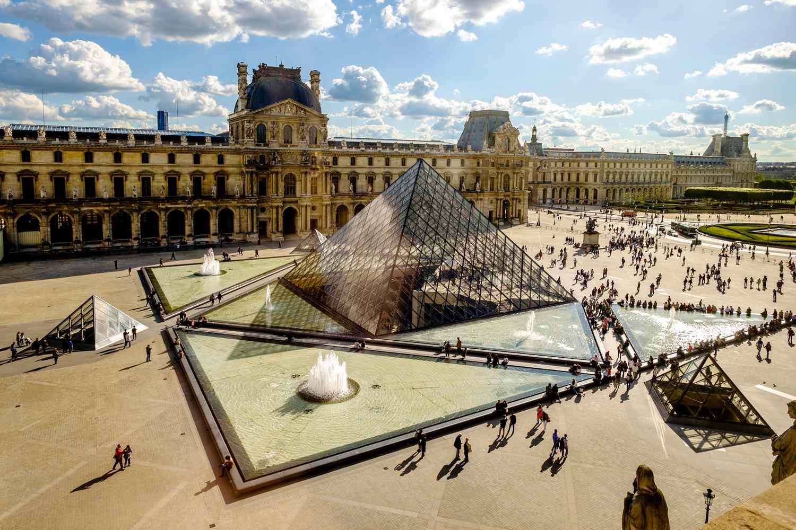
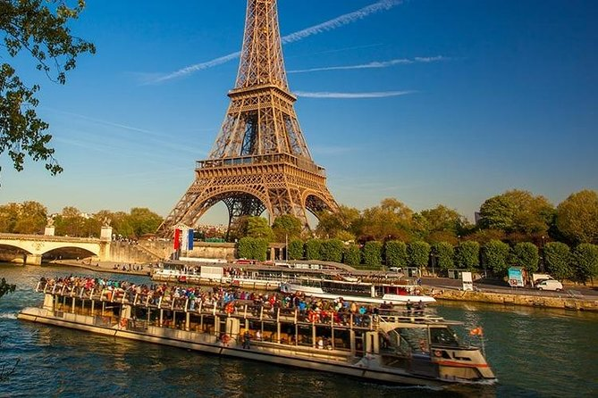

Best Leisure Activities To Do
Disneyland Paris

Visit Disneyland Paris for a magical experience with family and friends.
Climb the Montmartre and Visit Sacré-Cœur

Today Sacré-Cœur still operates as a Roman Catholic Church dedicated to the Sacred Heart of Jesus,
but also welcomes tourists who come to admire the basilica's beautiful architectural details, stunning artwork and spectacular views of Paris.
Climbing to the top of Montmartre to visit this beauty was one of the most scenic activities i've ever had,
and I recommend anyone else visiting Paris should do the same!
Explore the Louvre Museum

Explore the Louvre Museum, home to thousands of works of art including the Mona Lisa.
Louvre tickets are incredibly affordable, and 100% worth it.
Seine River Cruise & French Countryside

Take a Seine River cruise to see the city's landmarks from a unique perspective.
Hiking and Wine Tasting in the Countryside

Enjoy hiking and wine tasting in the beautiful French countryside.